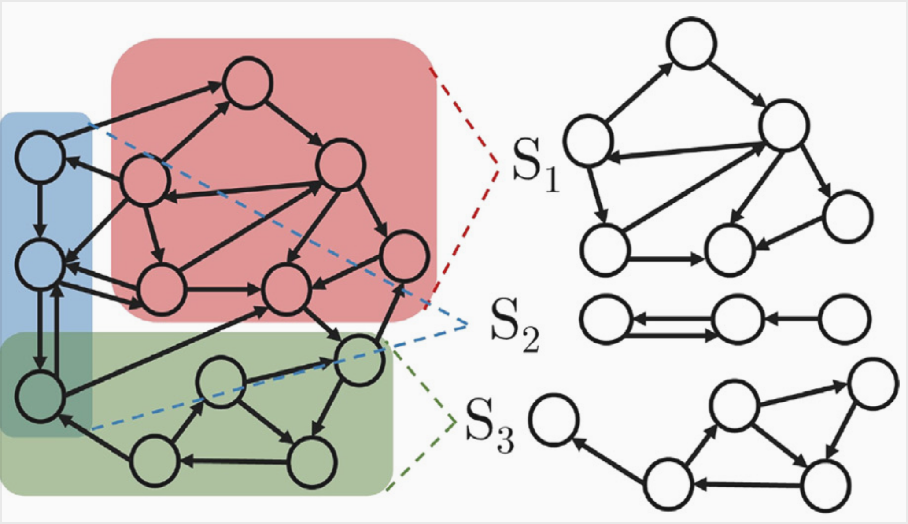

Engineering simulation, modeling, and coding
towards the optimum
I'm an engineer based in Colorado who likes to think about engineering design and the models
we use to measure success.
I currently work on simulation,
modeling, and surrogate development at
Pasteur Labs
.
My work has focused on
multiscale structural models, ML surrogate training,
and structural optimization techniques with
a mix of C++ and Python development
.
Check out some of my favorite projects, download
my resume/cv, and say hi on LinkedIn!
Second-order Homogenization
& Design Optimization
Second-order mechanical models incorporate length scale effects in a microstructural material model. In this paper , second-order homogenization models were developed for stress-constrained structural optimization.
Finite Element Analysis
& Design Optimization
 My work in Drexel's MCMB Lab involved the development of
high performance C++ (built around the PETSc library)
for nonlinear, multiscale finite element analysis.
The code is closed-source, but you can follow
its influence on the
MCMB Lab Website
.
My work in Drexel's MCMB Lab involved the development of
high performance C++ (built around the PETSc library)
for nonlinear, multiscale finite element analysis.
The code is closed-source, but you can follow
its influence on the
MCMB Lab Website
.
ML in Microstructural Design Optimization
 Tailored microstructures can boast superior performance
over their homogeneous constituents, but design of
structures and their constituents
is prohibitively costly.
In this paper
, neural network surrogate models are developed for
gradient based optimization of homogenized microstructures.
Tailored microstructures can boast superior performance
over their homogeneous constituents, but design of
structures and their constituents
is prohibitively costly.
In this paper
, neural network surrogate models are developed for
gradient based optimization of homogenized microstructures.
Multifidelity Graph Neural Networks
 Multifidelity Graph Neural Networks were designed to operate of subraphs of discrete simulations. In this paper, we trained several MFGNN architectures to emulate the convergence behavior of finite element models.
NixOS for Busy People
 I'm a big fan of NixOS - checkout
my NixOS config
for a pain-free, worry-free,
clutter-free Linux configuration.
I'm a big fan of NixOS - checkout
my NixOS config
for a pain-free, worry-free,
clutter-free Linux configuration.
That, as we enjoy great advantages from the inventions of others, we should be glad of an opportunity to serve others by any invention of ours; and this we should do freely and generously.- Benjamin Franklin